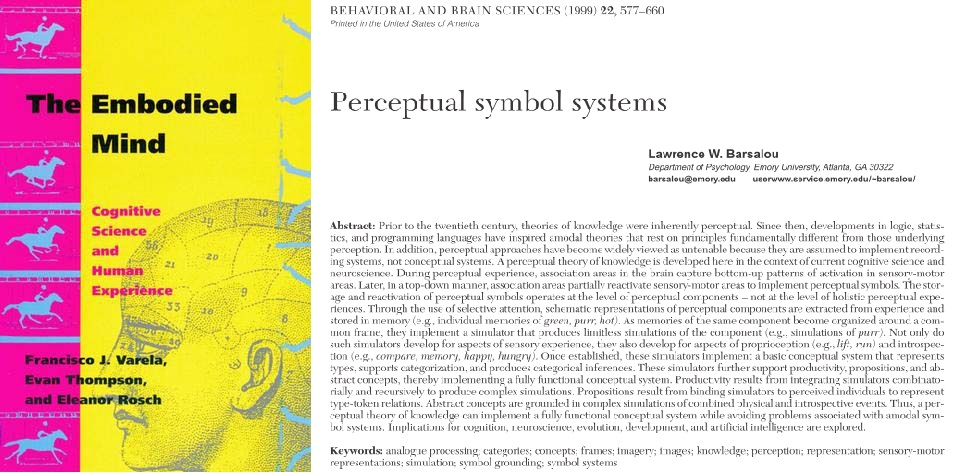
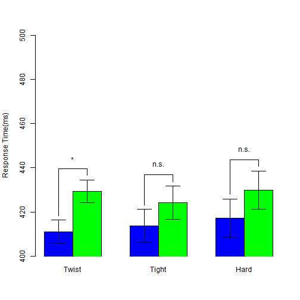
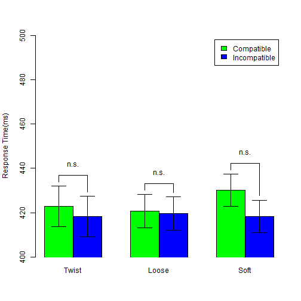

- A big picture 5 %
- Word decoding: Timeline of my studies 12.5 %
- Embodied cognition: Measure mental simulation 55 %
- Open science 27.5 %
See source files
My Academia
Word Decoding + Embodied Cognition
A trip to open science
陳紹慶
慈濟大學人類發展學系
Outline
A big picture

Word decoding: Timeline of my studies
Past
Compound character (像、經)
- Regularity and Consistency effects
- Two mental functions to acqurie and process the orthography-phonology correspondences.
Compound word (真實、假設)
- Masked repetition and word frequency interaction
- Early processing of constituent characters versus Reduced processing of whole word
Today
Orthography of Chinese characters
- What are samllest radicals to describe traditional and simplified Chinese characters?
Morphology of Chinese compound words
- What are quantitative and qualitative aspects of compounds/constituents?
Data science approach
- Search engine for multipe databases (Corpus, Mega studies, ...)
- Toolbox to design a word processing study
Mental Lexical Entry Project: Framework

- Primary goal: Direct mapping traditational and simplified Chinese characters.
Mental Lexical Entry Project: Applications
- For Researchers
- Use one key number access multiple databases.
- For Tutors
- Accumulate students' records
- Evidence based suggestions
- For Students
- Converge materials across scripts.
- Fit the individual learning curve.
Embodied cognition: Measure mental simulation
Why?
Colorless green ideas sleep furiously.


How many perspectives?
| Shapiro(2010) | Rowlands(2010) | |
|---|---|---|
| Conceptulization | Embodied mind | |
| Replacement | Enacted mind | |
| Constitution | Extended mind, Embeded mind |

How to measure mental simulation?
- Sentence-picture verification task
- Matching effect
- Word color discrimination
- Compatibility effect (Simon effect)
Sentence-picture verification: Example
我想吃盤子裡的蛋.
檢查下一張簡報的圖是否符合粗體字標示的詞.
Sentence-picture verification: Example

符合嗎?
- YES
- NO
Matching Effects
| Match | Mismatch | |
|---|---|---|
| RT | 697.00 | 761.00 |
| Correct Rate | 97.00 | 93.00 |
Zwaan, Stanfield, & Yaxley (2002)
- Embodied Simulation Hypothesis: "Perceptual symbols are activated after reading sentence"
- Supoort Perceptual Symbol System(Barsalou, 1999)
Matching Effects
- Positive matching effect (Match < Mismatch)
- shape (Zwaan, Stanfield, and Yaxley, 2002)
- orientation (Stanfield & Zwaan, 2001)
- Negative matching effect (Match > Mismatch)
- color (Connell, 2007)
- Replication problem
- Zwaan & Pecher(2012)
- color > shape > orientation
- Thinking
- Sentence-picture verification is a potential tool to inspect language comprehension rather than to inspect embodied cognition
- "... I see embodiment as a means and not as an end." (retrieved from Rolf Zwaan's blog, 2013/1/15)
Could we investigate the implicit processing of mental simulation?
Extrinsic Affective Simon Task (De Houwer, 2003)
- Word meaning classification -> Establish meaning-response compatibility
- Key 1 = Happy Key 2 = Disgust
- Word color discrimination -> Measure compatibity effect
- Key 1 = Color1 Key 2 = Color2
- Word 1 = Happy Word 2 = Disgust
- Compatible Case
- Key 1 ~ Happy Key 2 ~ Disgust
- Incompatible Case
- Key 1 ~ Disgust Key 2 ~ Happy
Original EAST Results
| Happy | Disgust | |
|---|---|---|
| Compatible | 660.00 | 707.00 |
| Incompatible | 636.00 | 678.00 |
De Houwer(2003), Experiment 1
Modified EAST Design
- Word meaning classification
- Sentence-picture Verification
- Build situation in imagination
- Word color discrimination
- Associative words
- Actions and feelings matched the situation
- Two measurements
- Matching effect: Sentence-picture Verification
- Compatibility effect: Word color discrimination
Hypothesis
- Hypothesis of Embodied Simulation
- People comprehend the linguistic forms of objects as the way people see the objects in the real world (Bergen, 2012).
- see -> move? observe?
- I will hold this iron box.
- I will touch this iron box.
Situational Properties
- Actions
- Observe(pick): have not to exhaust strength
- Move(twist): have to exhaust strength
- Objects
- Observed objects (cubes) generate the feeling about texture
- Moved objects (jars) generate the feeling about strength
- Feelings
- Texture (hard, soft)
- Strength(tight, loose)
Critical Measurements
- Matching effect
- Which constituents in the situation could be explicit to our imagination?
- Compatibility effect
- Which constituents in the situation have the advantage established the implicit association of two unrelated imagination?
Predictions
- In the sentence-picture verification task, human mind would simulate the action on the target object and the feeling.
- Matching effect would happen to the pitcure that does not match the probe sentence.
- In the word color discrimination task, human mind would process the implicit association of the action and the feeling.
- Compatibility effect would happen to the word represented action or feeling but the color instructed the incompatible response key.
Results
- Matching Effects
- Twist: Close had a positive effect; Open had a negative effect.
- Pick: Cube and Sponge had positive effects.
- Compatibility Effects
- Blue Critical Words: Twist had a positive effect,
- Green Critical Words: All sets tend to be negative.
- Filler Words: No effects.
Sentence-Picture Verification: Summary


Word Color Discrimination: Critical Blue Words


Word Color Discrimination: Critical Green Words


Word Color Discrimination: Fillers
Blue

Green

Summary and Implication
- Replicating in the other LAB
- Action (did or did not) exhausted strength
- Two aspects of embodied simulation effect
- Explicit: Human minds process the surface of imagination/mental simulation.
- Implicit: Human minds process the ingrideints under imagination/mental simulation.
- Evoke embodied simulation in language comprehension?
Open Science
Elements
- Reproducible research
- Mass collaboration
Research Workflow
Suggest Hypothesis -> Design -> Collect Data -> Analyze Data -> Report
Reproducible Research Workflow
Suggest Hypothesis -> Design -> Collect Data -> Analyze Data -> Report -> Post Review
- Analytical Codes
- Cleaned data (Readable format, codebook)
- Programming codes (R, SAS, SPSS, Matlab, ...)
Make a Research Case Reproducible
- An open repository:
- Share analytical codes
- Share materials
- Share raw and analytical data <- will be available when published
#Tidy data of sentence-picture verification
AB_DATA <- read.table("../AB.csv",head=T,sep=",")
#Tidy data of word color discrimination
T_DATA <- read.table("../TEST.csv",head=T,sep=",")
# statistical figure
SP_RT1 <- barplot2(
SP_RT_M[,c(1,4)], beside=T,xpd=F,
ylim = c(350,550),ylab="Response Time(ms)",
col = c(rep(c("black","white"),2)), plot.ci = TRUE,
ci.l = (SP_RT_M[,c(1,4)] - SP_RTse_M[,c(1,4)]),
ci.u = (SP_RT_M[,c(1,4)] + SP_RTse_M[,c(1,4)]),
panel.first = TRUE )
Mass Collaboration
- Motivation
- Open to public
- Spirit of hackers
- Open repositories
- Easy access
- Stimulate collaboration
Open to public
Open to public

Spirit of hackers
萌典共同筆記
Lopen Project
Mental Lexical Entry Project + Lopen + Moe Dict + ... = Open Source Hub
Easy access
Github
Open Science Framework
Preview our Embodied Simulation Project